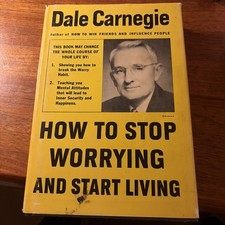

Library › Self-Improvement
How to Stop Worrying and Start Living — Summary & Key Lessons

Carnegie's other masterpiece — the practical anti-worry toolkit that's rescued anxious minds for 75 years.
📖 OPEN THE FULL INTERACTIVE BREAKDOWN →🌐 Read it in Hindi, Hinglish, Gujarati, Tamil & 22 more languages — free, with audio.
💡 The Big Idea
Written after Carnegie surveyed the wreckage worry made of his own early years, this is the how-to manual anxiety self-help still borrows from: live in DAY-TIGHT COMPARTMENTS (shut the iron doors on dead yesterdays and unborn tomorrows — today is the only theater of action); use the WILLIS CARRIER magic formula for crisis (ask 'what is the worst that can possibly happen?', prepare to accept it, then calmly improve on the worst); understand worry's body-bill (executives' ulcers and breakdowns as compound interest on rehearsed catastrophe); break the habit with analysis (get the facts, weigh them, decide, ACT — then refuse reopening), busyness (the worried mind cannot hold two tenants; crowd worry out with action), the law of averages (most feared events are statistical phantoms), cooperating with the inevitable, and a STOP-LOSS order on every grievance. Plus the peace-and-happiness section: never waste a minute on enemies, expect ingratitude, count blessings not troubles, be yourself, and make lemonade from every lemon delivered.
🧠 The 6 Key Lessons
Lesson 1: Day-Tight Compartments: The Iron Doors
Part 1: Fundamental Facts About Worry
The book opens with the counsel that saved a medical student from breakdown and built a legendary career: William Osler's prescription — live in DAY-TIGHT COMPARTMENTS, like a great ship sealing its bulkheads: shut the iron doors on the past (dead yesterdays can sink you only if you let them flood in) and on the future (unborn tomorrows drown you in imagined weight), and operate in the only compartment where anything can actually be done — today. Carnegie is precise about what this is NOT: not refusing to plan (planning is today's work), but refusing to LIVE in tomorrow — the anxiety of carrying next year's cargo through today's hours. His supporting arithmetic: today's burdens are almost always carryable; what breaks people is today's burden PLUS yesterday's regret PLUS tomorrow's dread — a load no one was built for and no one is required to lift.
📖 Example: Osler himself is the exhibit: the anxious student paralyzed by finals, career, and livelihood, transformed by one Carlyle sentence ('our main business is not to see what lies dimly at a distance, but to do what lies clearly at hand') into the era's most… Read the full example →
⚡ Do this: Practice one full day-tight day: this morning, consciously shut both doors — no past-audit, no future-rehearsal permitted; every intrusion answered with the question 'what lies clearly at hand?' Score the evening on presence, not productivity. Repeat until the doors close on command.
Lesson 2: The Carrier Formula: Accept the Worst, Then Improve It
Part 1: A Magic Formula for Solving Worry Situations
Carnegie's favorite technique came from engineer Willis Carrier (yes, air-conditioning Carrier), facing a career-threatening failure as a young man. The three steps: (1) ask honestly, WHAT IS THE WORST THAT CAN POSSIBLY HAPPEN? (worry thrives on vagueness — the undefined catastrophe is infinite; the defined one has edges); (2) PREPARE TO ACCEPT THE WORST, if necessary (the psychological jiu-jitsu move: acceptance releases the energy that resistance was consuming — 'having accepted the worst, we have nothing to lose, and everything to gain'); (3) then CALMLY IMPROVE ON THE WORST (with acceptance's calm restored, the mind can finally engineer — and the improvements come, because the worst rarely arrives once someone competent starts working the problem). The formula's genius is sequencing: most people try step three while still refusing step two, and the refusal keeps the panic in the driver's seat.
📖 Example: Carrier's original case: a $20,000 gas-cleaning installation failing at a Missouri factory — the young engineer sleepless until he ran the steps: worst case, the company loses the twenty thousand and he loses face (survivable — defined, it shrank); accepted,… Read the full example →
⚡ Do this: Run the formula on your current heaviest worry, on paper: define the worst in one concrete sentence (edges, not fog), write 'I can survive this because...' and mean it, then list three improvements now available to the calm version of you. Notice which step you had been skipping.
Lesson 3: The Worry-Breaking Toolkit: Facts, Busyness & the Law of Averages
Parts 2–3: How to Analyze Worry / Break the Habit Before It Breaks You
The habit-demolition kit. ANALYSIS: worry is confusion wearing urgency — Carnegie's protocol (borrowed from Dean Hawkes of Columbia): get the FACTS impartially (write both sides as if for an opponent — half of worry dies at the facts stage), ANALYZE them on paper (what is the problem? what are the causes? what are the possible solutions? what is the best one?), then DECIDE and ACT — and once acted, refuse the case's reopening (the decided worry re-litigated nightly is the habit's favorite meal). BUSYNESS: the mind cannot hold worry and absorbing action simultaneously — 'the worried person must lose himself in action' (Carnegie's files: the bereaved and the broken healed by full calendars where empty ones had nearly killed). THE LAW OF AVERAGES: interrogate each fear's actual odds (most feared catastrophes are phantoms — his insurance-industry framing: the odds-makers get rich on our overestimates). Plus: cooperate with the INEVITABLE (the willow survives what breaks the oak — 'it is so; it cannot be otherwise' as the sanity clause), and set STOP-LOSS orders on grievances: decide in advance how much anxiety any issue is worth, and sell at the limit.
📖 Example: The stop-loss exhibit is Carnegie's own confession: years of fury at a critic, ended by the realization he had been paying compound interest on a debt only he could collect — the stop-loss order written that day. The busyness files: Marion Douglas (a… Read the full example →
⚡ Do this: Take your top three worries through the full pipeline this week: facts on paper (both sides), the four analysis questions, a decision, one action — case closed. Assign each surviving worry a stop-loss (minutes per day, then sold). And put one absorbing project where your emptiest, worry-friendliest hours currently live.
Lesson 4: Peace and Happiness: Enemies, Ingratitude & Lemons
Parts 4–6: Seven Ways to Peace / The Perfect Way to Conquer Worry / Criticism
The closing prescriptions for the worry-free temperament. ENEMIES: never waste a minute on them — hate injures the hater exclusively ('when we hate our enemies, we are giving them power over us: power over our sleep, our appetites, our blood pressure') — Carnegie's hardest case studies forgiving the unforgivable, for the forgiver's own vitals. INGRATITUDE: expect it — gratitude is cultivated, not natural (Christ healed ten lepers; one thanked him) — so give for the giving's sake and be delightfully surprised by any returns. COUNT BLESSINGS, not troubles (his estimate: we spend 90% of our attention on the 10% that is wrong — the two-men-prison-bars couplet as the corrective). BE YOURSELF (envy is ignorance, imitation is suicide — you are a new thing in the universe; play your own hand). And the lemon doctrine: when life hands lemons, the fool curses fate while the wise man asks 'what does this misfortune make possible?' — the book's gallery of lemon-conversions running from blind poets to bankrupt farmers whose forced pivots outperformed their original plans. Criticism's kit completes it: unjust criticism is often an inverted compliment (nobody kicks a dead dog), do your best and let the umbrella of acceptance handle the rain, and keep a written record of your own fool things — humility as armor.
📖 Example: The lemon gallery's star: the farmer whose land grew neither fruit nor grain — only rattlesnakes — who built a business canning rattlesnake meat and shipping venom to laboratories: the town eventually renamed itself Rattlesnake, in honor of the lemon… Read the full example →
⚡ Do this: Write the stop-loss on your oldest enemy tonight — the account closes for YOUR vitals, not their deserving. Run the 90/10 audit: list what is RIGHT that you have been ignoring. And take your current lemon and ask the conversion question in writing: what does this make possible that the original plan never did?
Lesson 5: Cooperate With the Inevitable: The Art of the Graceful Surrender
Part 2: The Mindset
Carnegie's most philosophical chapter: some things cannot be changed — the past, the weather, other people, death — and fighting them is the definition of wasted energy. His advice is to cooperate with the inevitable: accept what cannot be changed and redirect all your energy toward what can. The stoic core of the book: worry is a tax on problems you can't solve, paid in advance. The graceful surrender is not defeat; it is the strategic withdrawal that frees your forces for the battles you can actually win. The person who stops fighting reality starts winning within it.
📖 Example: Carnegie tells of a man who lost everything in the Depression and spent years raging against his fate — until he accepted it, started over with nothing, and built a better life than the one he'd lost. The surrender, not the struggle, was the turning point. Read the full example →
⚡ Do this: List everything currently worrying you. Mark each item: changeable or unchangeable. For every unchangeable one, write 'accepted' — and spend this week's energy only on the changeable ones.
Lesson 6: Don't Let the Critics Get You Down: The Only Way to Avoid Criticism
Part 3: The People
Carnegie's reminder for anyone doing anything visible: the only way to avoid criticism is to do nothing, say nothing and be nobody. Criticism is the tax on visibility — and the people who matter are rarely the ones shouting. His advice: evaluate your own work honestly, learn what's useful from criticism, and ignore the rest — because no one can please everyone, and trying to is a full-time job with no salary. The antidote to the sting is not thicker skin but clearer purpose: when you know why you're doing something, the critics' noise becomes background static.
📖 Example: Carnegie quotes the greats who were savaged by critics — from Lincoln to famous authors — and notes that the criticism that mattered was the fair kind from people whose judgment they respected. The rest was noise that history forgot. Read the full example →
⚡ Do this: Write down your last piece of criticism. Extract the one useful kernel (if any), act on it, and then consciously release the rest of it today.
✅ 5-Step Action Plan
- Live one day-tight day; close both iron doors on command.
- Run the Carrier formula on the heaviest worry — define, accept, improve.
- Pipeline three worries: facts, analysis, decision, action, case closed.
- Set stop-loss orders on grievances; fill the worry-friendly hours.
- Close the enemy account; audit the 90% going right; convert the lemon.
💬 Best Quotes from How to Stop Worrying and Start Living
- “Our main business is not to see what lies dimly at a distance, but to do what lies clearly at hand.”
- “Ask yourself: what is the worst that can possibly happen? Then prepare to accept it. Then calmly proceed to improve on the worst.”
- “Two men looked out from prison bars — one saw the mud, the other saw stars.”
Interactive version: mark lessons as read, listen in your language, share quote cards.